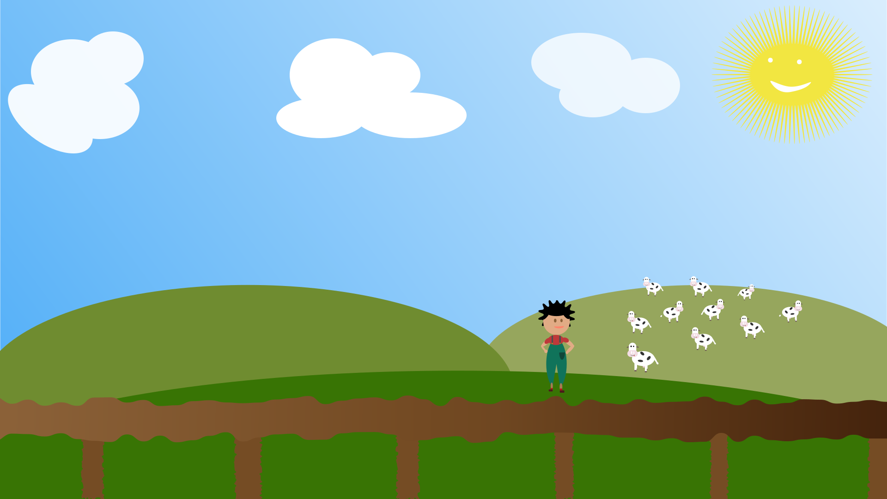

Chapter 1
It was a beautiful day and Farmer Victoria just checked up on her cows. No Cow was missing. Farmer Victoria had a very busy day and therefore went to bed early. But this night was not an usual night. Something purple in flames is falling down from the sky right to the field of the cows.

Chapter 2
The cows got curious and moved closer to the mysterious thing that just fell from the sky. As soon as the cows realized that the mysterious thing tasted delicious, they started drinking all of the unknown liquid and fell asleep


Chapter 3
A new morning and Farmer Victoria was just about to check up on her Cows when she realized all of them are gone. Just in the moment the tears caught Farmer Vicotirias cheeks, she saw something unimaginable. The cows are flying above her.


Chapter 4
In total shook Farmer Victoria tries to catch the Cows but no chance. The cows are too high for her. In total despair Farmer Victoria accepts the destiny of her Cows and realized there is no way for her to catch them. She starts humming her old beloved melody from her childhood as a goodbye act.


Chapter 5
The more she goes into the melody, she realized some of the cows are on the ground again and just look like before. Farmer Victoria realized that maybe singing is the solution. She starts singing more clearly and loudly and she was right. ALl 10 cows are on the round again. It's a happy end.